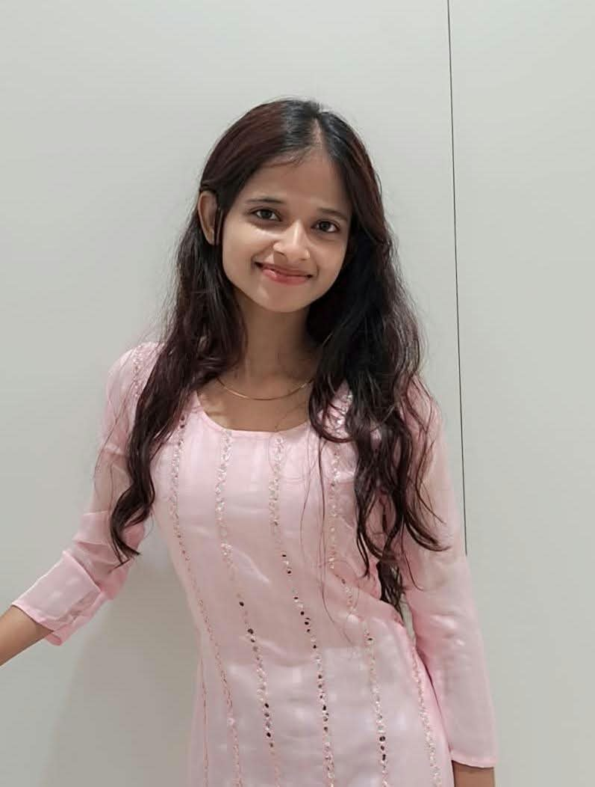

B.Tech – Artificial Intelligence and Data Science
Sri Muthukumaran Institute of Technology
Chennai, Tamil Nadu
HELLO, I'M
I'm an Artificial Intelligence and Data Science student passionate about technology and building useful digital experiences. I help small businesses and individuals create professional portfolio and business websites.

01 / ABOUT ME
Curious about technology. Inspired by ideas. Motivated by building.
I am a B.Tech Artificial Intelligence and Data Science student. I am passionate about AI, technology, and software development.
I enjoy learning new skills and exploring innovative ideas. My goal is to become a skilled professional and create useful, creative solutions through technology.
I'm also beginning my freelance journey, helping small businesses and individuals build their online presence through professional portfolio websites and responsive business websites.
02 / EDUCATION
Sri Muthukumaran Institute of Technology
Chennai, Tamil Nadu
03 / TECHNICAL SKILLS
04 / INTERNSHIPS & EXPERIENCE
Organizations and roles as provided. Dates and status should be checked against your offer letters or certificates before final publication.
CodeAlpha
CyberSNova
Codomax Digital Solutions
Thiranex
Datheon
Successfully completed a project-based web development internship.
05 / PROJECTS
A responsive portfolio presenting my profile, skills, projects, experience, and contact information.
A task management application for organizing daily activities, tracking progress, and managing tasks.
An AI-based concept for supporting mood-aware learning experiences.
A farmer-to-customer platform concept focused on direct connections, transparent pricing, produce traceability, and market access.
06 / CERTIFICATIONS
Certificate details will be added after the completed certificates are provided and verified.
07 / ACHIEVEMENTS
Awards, research presentation recognitions, and other achievements will be added once their details are confirmed.
08 / ACTIVITIES & LEADERSHIP
Student organizations, volunteering, leadership roles, and extracurricular activities can be added here when you share the details.
09 / CONTACT
I'm starting to work with small businesses and individuals on portfolio and website projects. Feel free to connect about a project or collaboration.
View GitHub ↗